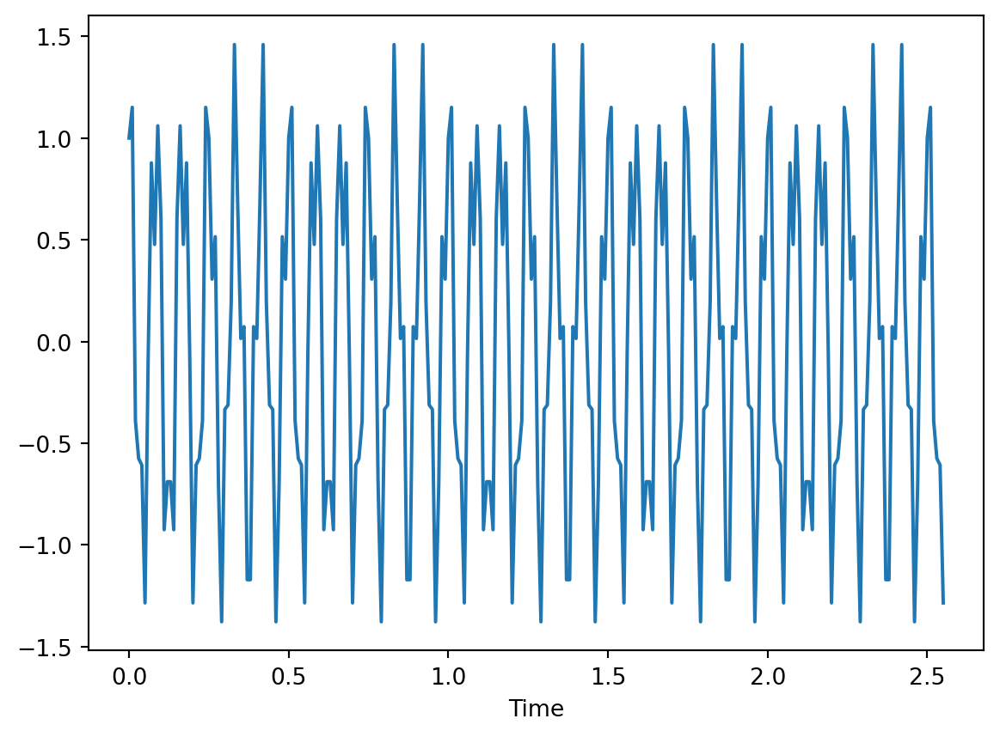
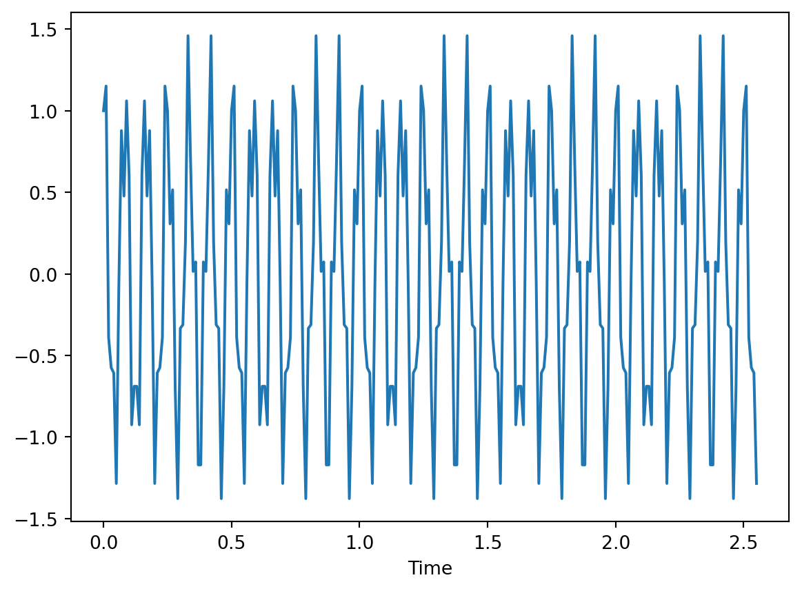
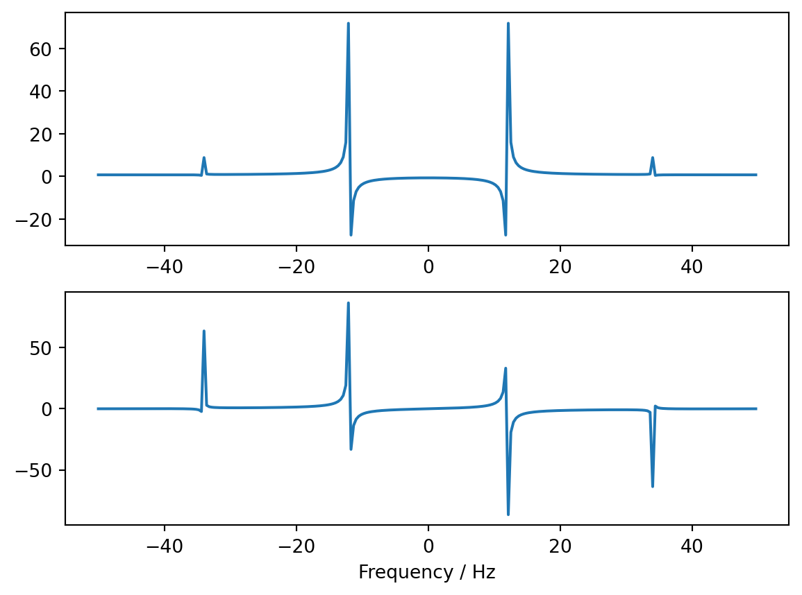

import numpy as np
import matplotlib.pyplot as plt
dt=0.01
fftsize=256
t=np.arange(fftsize)*dt
#Generate some fake data at 12 Hz and 34 Hz
y=np.cos(2*np.pi*12*t)+0.5*np.sin(2*np.pi*34*t)
plt.plot(t,y)
plt.xlabel("Time")Text(0.5, 0, 'Time')
You’ve met Fourier in the context of Fourier series, where a periodic function is represented as an infinite series, and Fourier transforms, where a non-periodic function is represented as an integral. Both representations are infinite, involving all the points on a real interval or an infinite number of terms in a series, so not really suitable for representation on a computer. For that we need a third thing: the discrete Fourier transform (DFT). After defining it, we’ll see there is a divide and conquer type algorithm for calculating it efficiently called the fast Fourier transform (FFT), which opened up an enormous number of applications across science and engineering.
The discrete Fourier transform is a change of basis in a finite dimensional space. You can think of it as taking a signal sampled at a finite number of regularly spaced time points and outputting a representation of the signal at a finite number of frequency points (this is a common application).
For a vector \(x_j = 0,\ldots N-1\), we define the DFT by \[ F_n = \sum_{j=0}^{N-1} f_j e^{-i\eta_n j}, \tag{1}\] where \(\eta_n\equiv \frac{2\pi n}{N}\), and \(n = 0,\ldots N-1\). The coefficients \(F_n\) contain the same information as \(f_j\), and \(f_j\) can be recovered completely by inverting the operation. The key to inverting Equation 1 is the observation \[ \sum_{n=0}^{N-1} e^{i\eta_n j} = \begin{cases} 0 & j\neq 0 \mod N\\ N & j = 0 \mod N. \end{cases} \tag{2}\]
Perhaps the slickest way to to see this is to observe that \[ z^N-1 = (z-1)(1 + z + z^2 +\cdots z^{N-1}) \] Can you fill in the rest of the argument?
This gives \[ f_j = \frac{1}{N}\sum_{n=0}^{N-1} F_n e^{i\eta_n j}. \tag{3}\] A more democratic definition would have \(1/\sqrt{N}\) in both definitions Equation 1 and Equation 3. This would allow us to regard the DFT as a basis change to an orthonormal basis of vectors \(e^{(n)}_j = \frac{e^{i\eta_n j}}{\sqrt{N}}\) 1. Then both the DFT and its inverse would be unitary transformations.
We often think of Fourier transforms involving complex exponentials in terms of positive and negative frequency contributions. When \(N\) is finite the \(\eta_n\) values for \(n\) close to \(N-1\) can be regarded as the negative frequencies since \(e^{-i\eta_n j}=e^{2\pi ij -i\eta_n j}=e^{i\eta_{N - n}j}\).
There are a several limits we can consider that connect the DFT with the things you have already met.
In this limit the \(\eta_n\) values become dense in the range \((-\pi,\pi]\), with separation \(\Delta \eta = 2\pi/N\), and we replace the sum in the inverse DFT Equation 3 by an integral according to the prescription \[ \sum_{n=0}^{N-1} \left(\cdots\right) \xrightarrow{N\to\infty} N \int_{0}^{2\pi} \frac{d\eta}{2\pi}\left(\cdots\right), \] giving \[ f_j = \int_{0}^{2\pi} \frac{d\eta}{2\pi}\,F(\eta) e^{i\eta j}. \]
Alternatively, regard the \(N\to\infty\) limit as sampling a function \(f(x)\) ever more finely in the range (0,L]. Now it’s the DFT, rather than the inverse, that becomes an integral \[ \hat f(k) \equiv \int_0^L f(x) e^{-ik_n x}\,dx, \] where \(k_n =2\pi n/L\). Note that \(k_n x = \eta_n j\). The pair of transformations is now \[ \begin{align} \hat f_k &= \int_0^L f(x) e^{-ik_n x}\,dx\nonumber\\ f(x) &= \frac{1}{L}\sum_k \hat f_k e^{ik_n x} \end{align} \tag{4}\] This is the conventional form of the Fourier series for a function with period \(L\).
With this definition \(\hat f_k\) has an extra dimension of distance (on account of the integral), which gets removed by the \(1/L\) in the inverse transform.
The analog of the identity Equation 2 is \[ \frac{1}{L}\sum_k e^{ik x} = \delta_L(x), \] where \(\delta_L(x)\) is an \(L\)-periodic version of the \(\delta\)-function.
Finally we arrive at the Fourier transform, where we take \(L\to\infty\), so that the inverse transform in Equation 4 becomes an integral too \[ \begin{align} \hat{f}(k) & = \int_{-\infty}^\infty f(x) e^{-ik_n x}\,dx\nonumber\\ f(x) &= \int_{-\infty}^\infty \hat f(k) e^{ik_n x}\,\frac{dk}{2\pi}. \label{coll_FTTrans} \end{align} \]
Here are some properties that hold for all of the above.
If \(f_j\) is real then \(F_n = \left[F_{-n}\right]^*\).
If \(f_j\) is even (odd) 2 , \(F_n\) is even (odd).
(Ergo) if \(f_j\) is real and even, so is \(F_n\).
The DFT generalizes to higher dimensions straightforwardly. Suppose we have data living in \(d\) dimensions with \(N_i\) datapoints along dimension \(i=1,\dots d\), then the DFT is \[ F_{\mathbf{n}} = \sum_{\mathbf{n}} f_\mathbf{j}e^{-i \boldsymbol{\eta}_\mathbf{n}\cdot \mathbf{j}}, \] where \(\mathbf{j}=(j_1,\ldots j_{d})\) with \(j_i = 0,\ldots N_i - 1\) and likewise \(\boldsymbol{\eta}_\mathbf{n} = 2\pi (n_1 / N_1, \ldots n_d/ N_d)\) \(n_i = 0,\ldots N_i - 1\)
What is the complexity of computing the Fourier transform? Equation 1 may be regarded as matrix-vector multiplication, where \(f_j\) are the \(N\) components of a vector and the matrix has elements \(Q_{n j}\equiv e^{-i\eta_n j}\), so that the DFT is written \[ \mathbf{F} = Q \cdot \mathbf{f}. \] Naively, then, the complexity is \(O(N^2)\).
Surprisingly, we can do a lot better than this, because \(Q\) is not any old matrix but has a great deal of structure. To see this, we follow the divide and conquer pattern of trying to break the problem up into two sub-problems, in this case by separating the \(N/2\) even and \(N/2\) odd coefficients (assuming \(N\) even)
\[ f^{\text{e}}_j = f_{2j}\qquad f^{\text{o}}_j = f_{2j+1},\qquad j=0,\ldots N/2 - 1. \]
The key idea is that we are going to express the DFT \(F_n\) in terms of the DFT of \(f^\text{e}_j\) and \(f^\text{o}_j\).
Before going on, it’s convenient to introduce the \(N\)th root of 1 \(\omega_N \equiv e^{2\pi i/N}\), so that \(e^{i\eta_n j}=\omega_N^{nj}\) and we can write the Fourier transform as
\[ F_n = \sum_{j=0}^{N-1} f_j \omega_N^{-nj} \]
Then we notice the following
\[ \begin{align} F_n &= \sum_{j=0}^{N-1} \omega_N^{-nj} f_j \\ &=\sum_{j=0}^{N/2-1} \left[\omega_N^{-2nj} f^{\text{e}}_j + \omega_N^{-n(2j+1)}f^{\text{o}}_j\right]\\ &=\sum_{j=0}^{N/2-1} \left[\omega_{N/2}^{-nj} f^{\text{e}}_j + \omega_N^{-n}\omega_{N/2}^{-nj}f^{\text{o}}_j\right].\\ \end{align} \]
This is already looking like the sum of two DFTs of size \(N/2\) but we have to be a bit careful with the indexing, as the original index \(n\) takes values \(0,\ldots N-1\). We can write \(n\) as
\[ n = (N/2)n_0 + n' \]
where \(n_0=0,1\) and \(n'=0,\ldots N/2 - 1\). If \(n\) is a power of 2 then \(n_0\) is the most significant bit of \(n\) when written in binary and \(n'\) are the remaining bits. Since \(\omega_{N/2}^{-jn}=\omega_{N/2}^{-jn'}\) we have
\[ \begin{align} F_n &= \sum_{j=0}^{N/2-1} \left[\omega_{N/2}^{-n'j} f^{\text{e}}_j + (-1)^{n_0}\omega_N^{-n'} \omega_{N/2}^{-n'j}f^{\text{o}}_j\right]\\ &= F^\text{e}_{n'} + (-1)^{n_0}\omega_N^{-n'} F^\text{o}_{n'}. \end{align} \tag{5}\]
This is the big payoff: using the properties of the Fourier matrix we have expressed the DFT \(F_n\) in terms of the DFTs of two arrays of half the length. If \(N\) is a power of 2 we can repeat that process until we get to arrays of length 1, in which case the array and its DFT are the same single number.
The structure of the FFT is often illustrated in terms of the “Butterfly” diagram, which probably makes more sense after you’ve seen Equation 5.
It should be clear that the FFT is going to beat the naive approach, but let’s analyze the complexity more carefully. If \(T(N)\) is time (or number of steps) required to compute the DFT for size \(N\) inputs, then calculating \(F^\text{e}_{n'}\) and \(F^\text{0}_{n'}\) takes time \(2T(N/2)\). Using Equation 5 to evaluate \(F_n\) is a further \(N\) steps, so we have 3
\[ T(N) = 2T(N/2) +\alpha N \]
for some \(\alpha\). This implies \(T(N)=\Theta(N\log N)\).
What happens when \(N\) isn’t a power of 2? You can still use the divide and conquer strategy for any other factor \(p\) of \(N\). If the largest prime factor of \(N\) is bounded i.e. doesn’t grow with \(N\) 4, then this still yields \(T(N)=\Theta(N\log N)\). If \(N\) is prime you have to use something else.
As a practical matter it’s probably best to try and ensure that \(N\) is a power of two e.g. by choosing the size of your simulation appropriately or padding your data with zeros until its length is a power of 2.
The modern invention of the FFT is credited to Cooley and Tukey (1965). Certainly they were the first to discuss its complexity. The divide and conquer approach was however anticipated by Danielson and Lanczos (1942), who had applications in crystallography in mind, and by unpublished work of Carl Friedrich Gauss in 1805 (predating even Fourier) in his astronomical studies. See Cooley, Lewis, and Welch (1967) for more on the historical background.
As usual, you don’t have to go implementing this yourself. The FFT is available in both NumPy (in the numpy.fft module) and SciPy (in scipy.fft), the latter with a more comprehensive set of functions.
Equation 1 and Equation 3 are the default definitions used in these modules, though you should always check the conventions used in any library implementation. The NumPy documentation provides a careful discussion of the positive and negative frequency components and there are several helper functions available to make your life easier, such as:
np.fft.fftfreq(n, d), which returns the frequencies (not the angular frequencies) for input size \(n\) and sample spacing \(d\).np.fft.fftshift(A) shifts data so that the zero frequency is in the centre.np.fft.ifftshift(A) inverts this.Here are some simple examples of their use, applied to a very simple signal consisting of two sinusoids at 12 Hz and 34 Hz:
import numpy as np
import matplotlib.pyplot as plt
dt=0.01
fftsize=256
t=np.arange(fftsize)*dt
#Generate some fake data at 12 Hz and 34 Hz
y=np.cos(2*np.pi*12*t)+0.5*np.sin(2*np.pi*34*t)
plt.plot(t,y)
plt.xlabel("Time")Text(0.5, 0, 'Time')
Now we can take the FFT and plot vs array index, or against the real frequency (with the given sample spacing of \(dt=0.01\))
Y=np.fft.fft(y)
# Plot FFT modulus versus array index
plt.subplot(2,1,1); plt.plot(abs(Y))
# Now use the correct frequency coordinates
f=np.fft.fftfreq(fftsize, dt)
# Reordering makes a tidier plot...
Y=np.fft.fftshift(Y)
f=np.fft.fftshift(f)
plt.subplot(2,1,2); plt.plot(f, abs(Y))
plt.xlabel("Frequency / Hz")
plt.show()As we discussed in Section 1.4, the Fourier transform of real valued data has the property \(F_n = \left[F_{-n}\right]^*\):
plt.subplot(2,1,1); plt.plot(f,Y.real)
plt.subplot(2,1,2); plt.plot(f,Y.imag)
plt.xlabel("Frequency / Hz")
plt.show()
Note that, even though our signal consists of just a pair of sinusoids, the FFT does not just consist of \(\delta\)-functions, which is more obvious on a log-scale:
plt.magnitude_spectrum(y, Fs=100, scale='dB')
plt.show()The reason, as you may guess from your knowledge of Fourier transforms, is that our data is of finite length. This windowing causes the FFT to have non-zero values outside the frequencies present in the signal, a phenomenon called spectral leakage. In our case a sharp window means that the FFT is effectively convolved with the Fourier transform of a top hat function i.e. a sinc function. If the window happens to contain a whole number of wavelengths of the signals present, spectral leakage does not occur.
The effects of windowing can be mitigated by choosing different window functions — with smooth edges for example — to multiply our data, depending on what you are looking for. The rectangular / top hat window has low dynamic range: it is not great at distinguishing contributions of different amplitude even when their frequencies differ, as leakage from the large peak may obscure the other, smaller ones. On the other hand it has high resolution, meaning that it is good at resolving peaks of similar amplitude that are close in frequency. Expect to be presented with several options (Hamming, Tukey (him again), etc.) when using library functions that perform spectral analysis.
The FFT has a mindboggling number of applications ranging from signal processing in experimental data, audio and video signals, to numerical simulation, where spectral methods exploit the FFT as part of the numerical solution of partial differential equations. Here, we’ll look at just a couple of examples.
As an example, let’s look at some of the stages in the analysis of time series data from the LIGO and Virgo experiments on gravitational wave detection that led to the 2017 Nobel prize in physics. I’m following Abbott et al. (2020) closely here, and you should check it out for further details, as well as the accompanying notebook that describes how the analysis is performed in Python.
As illustrated in Figure 1 uncovering the signal in the raw data involves a number of processing steps designed to eliminate noise, mostly carried out in the Fourier domain. The guiding principle is that the noise is stationary — meaning that it is described by a random process that does not change in time — while the signal is transient. This idea can be used to reduce noise in the data even though low frequency noise completely dominates the raw measurement (top panel).
The first step is windowing, which we have already discussed, designed to reduce spectral leakage. Next, the data is whitened, meaning that the Fourier spectrum is normalized by the spectral density (the power spectrum is made to resemble the power spectrum of white noise) \[ \tilde d(f)\longrightarrow \frac{\tilde d(f)}{S_n^{1/2}(f)}. \]
The idea behind this step is to prevent high amplitude noise in certain parts of the spectrum from swamping the signal. After this step (third panel, red trace), the low frequency noise has been greatly reduced.
Finally, the data are bandpass filtered with a pass band [35 Hz, 350 Hz], which removes low frequency seismic noise and high frequency (quantum) noise from the detector. Filtering is the Fourier analog of windowing i.e. multiplying by a function to discard certain parts of the signal. At this point, a transient is revealed in the data (bottom panel).
The next step is to fit this transient with a model that describes the graviational wave physics. An important check on the correctness of this approach is to then analyze the residual — the difference between the data and the model — and to check whether it is described by a stationary noise process (see Figure 2). In such a process the phases of the Fourier components are random and uncorrelated, for example.
Hopefully this short summary has emphasized the vital role played throughout by the processing of signals in the Fourier domain, and therefore the importance of the FFT in analyzing time series data.
We’ll illustrate the role of the FFT in the numerical solution of partial differential equations (PDEs) using one that you all know well: the time-dependent Schrödinger equation
\[ i\hbar \frac{\partial \psi}{\partial t} = -\frac{\hbar^2}{2m}\nabla^2 \psi + V(\mathbf{r})\psi. \tag{6}\]
When the potential is absent, the solutions are superpositions of plane waves
\[ \Psi_\mathbf{k}(\mathbf{r}, t) = \exp\left[-i\frac{\hbar \mathbf{k}^2 t}{2m} +i\mathbf{k}\cdot\mathbf{r}\right]. \tag{7}\]
On the other hand, if the first term on the right hand side of Equation 6 — representing the kinetic energy — were absent, then the evolution of the wavefunction would be
\[ \Psi(\mathbf{r}, t) = \Psi(\mathbf{r}, 0)\exp\left[-iV(\mathbf{r})t/\hbar\right]. \tag{8}\]
The idea behind the split-step method is that the time evolution can be approximated by alternating the two kinds of time evolution represented by Equation 7 and Equation 8. In more formal terms, write Equation 6 in operator form as
\[ i\hbar \frac{\partial \ket{\psi}}{\partial t} = H\ket{\psi} = (T+V)\ket{\psi} \]
The solution is \(\ket{\psi(t)} = \exp(-iHt/\hbar)\ket{\psi}(0)\). The exponential of an operator sum \(A+B\) obeys the Lie product formula
\[ e^{A+B} = \lim_{n\to\infty}\left( e^{A/n}e^{B/n}\right)^n. \]
The logic behind this formula is that when the exponent is small, the failure of \(A\) and \(B\) to commute can be neglected. More precisely, \[ e^{xA}e^{xB} = e^{x(A+B) + O(x^2)}. \]
It turns out that a more accurate approximation is given by the Suzuki—Trotter formula
\[ e^{xA/2}e^{xB}e^{xA/2} = e^{x(A+B) + O(x^3)}. \]
In any case, the practical algorithm suggested by these formulas is implemented for the Schrödinger equation by switching between real space and Fourier space, where the two kinds of evolution are implemented. Here’s a simple 1D example:
def split_step_schrodinger(psi_0, dx, dt, V, N, x_0 = 0., k_0 = None, m = 1.0, non_linear = False):
len_x = psi_0.shape[0]
x = x_0 + dx*np.arange(len_x)
dk_x = (2*np.pi)/(len_x*dx)
if k_0 == None:
k_0 = -np.pi/dx
k_x = k_0+dk_x*np.arange(len_x)
psi_x = np.zeros((len_x,N), dtype = np.complex128)
psi_k = np.zeros((len_x,N), dtype = np.complex128)
psi_mod_x = np.zeros((len_x), dtype = np.complex128)
psi_mod_k = np.zeros((len_x), dtype = np.complex128)
psi_x[:,0] = psi_0
if not non_linear:
V_n = V(x)
else:
V_n = V(x,psi_0)
def _compute_psi_mod(j):
return (dx/np.sqrt(2*np.pi))*psi_x[:,j]*np.exp(-1.0j*k_x[0]*x)
def _compute_psi(j):
psi_x[:,j] = (np.sqrt(2*np.pi)/dx)*psi_mod_x*np.exp(1.0j*k_x[0]*x)
psi_k[:,j] = psi_mod_k*np.exp(-1.0j*x[0]*dk_x*np.arange(len_x))
def _x_half_step(j,ft = True):
if ft == True:
psi_mod_x[:] = np.fft.ifft(psi_mod_k[:])
if non_linear:
V_n[:] = V(x,psi_x[:,j])
psi_mod_x[:] = psi_mod_x[:]*np.exp(-1.0j*(dt/2.)*V_n)
def _k_full_step():
psi_mod_k[:] = np.fft.fft(psi_mod_x[:])
psi_mod_k[:] = psi_mod_k[:]*np.exp(-1.0j*k_x**2*dt/(2.*m))
def _main_loop():
psi_mod_x[:] = _compute_psi_mod(0)
for i in range(N-1):
_x_half_step(i,ft = False)
_k_full_step()
_x_half_step(i)
_compute_psi(i+1)
_main_loop()
return psi_x,psi_k,k_xdef oneD_gaussian(x,mean,std,k0):
return np.exp(-((x-mean)**2)/(4*std**2)+ 1j*x*k0)/(2*np.pi*std**2)**0.25
def V(x):
V_x = np.zeros_like(x)
V_x[np.where(abs(x) < 0.5)] = 1.5
return V_xN_x = 2**11
dx = 0.05
x = dx * (np.arange(N_x) - 0.5 * N_x)
dt = 0.01
N_t = 2000
p0 = 2.0
d = np.sqrt(N_t*dt/2.)
psi_0 = oneD_gaussian(x,x.max()-10.*d, d, -p0)
psi_x,psi_k,k = split_step_schrodinger(psi_0, dx, dt, V, N_t, x_0 = x[0])from matplotlib.animation import FuncAnimation
real_psi = np.real(psi_x)
imag_psi = np.imag(psi_x)
absl_psi = np.absolute(psi_x)
abs_psik = np.absolute(psi_k)
fig = plt.figure(figsize = (10,10))
ax1 = plt.subplot(211)
line1_R = ax1.plot(x,real_psi[:,0],'b')[0]
line1_I = ax1.plot(x,imag_psi[:,0],'r')[0]
line1_A = ax1.plot(x,absl_psi[:,0],'k')[0]
line_V = ax1.plot(x,0.5*V(x),'k',alpha=0.5)[0]
ax1.set_ylim((real_psi.min(),real_psi.max()))
ax1.set_xlim((x.min(),x.max()))
ax2 = plt.subplot(212)
line2 = ax2.plot(k,abs_psik[:,1],'k')[0]
ax2.set_ylim((abs_psik.min(),abs_psik.max()))
ax2.set_xlim((-10,10))
def nextframe(arg):
line1_R.set_data(x,real_psi[:,10*arg])
line1_I.set_data(x,imag_psi[:,10*arg])
line1_A.set_data(x,absl_psi[:,10*arg])
line2.set_data(k,abs_psik[:,10*arg])
animate = FuncAnimation(fig, nextframe, frames = int(N_t/10), interval = 50, repeat = False)
plt.show()Orthonormality follows from Equation 2.↩︎
with respect to the middle of the data.↩︎
Strictly we should write \(T(N) = 2T(N/2) +\Theta(N)\), where \(f(N)=\Theta(g(N))\) means \(\lim_{N\to \infty} \frac{f(N)}{g(N)}\) is a finite nonzero number. Thus \(\Theta(N)\) means “proportional to \(N\) in the large \(N\) limit”.↩︎
Such numbers are called smooth.↩︎